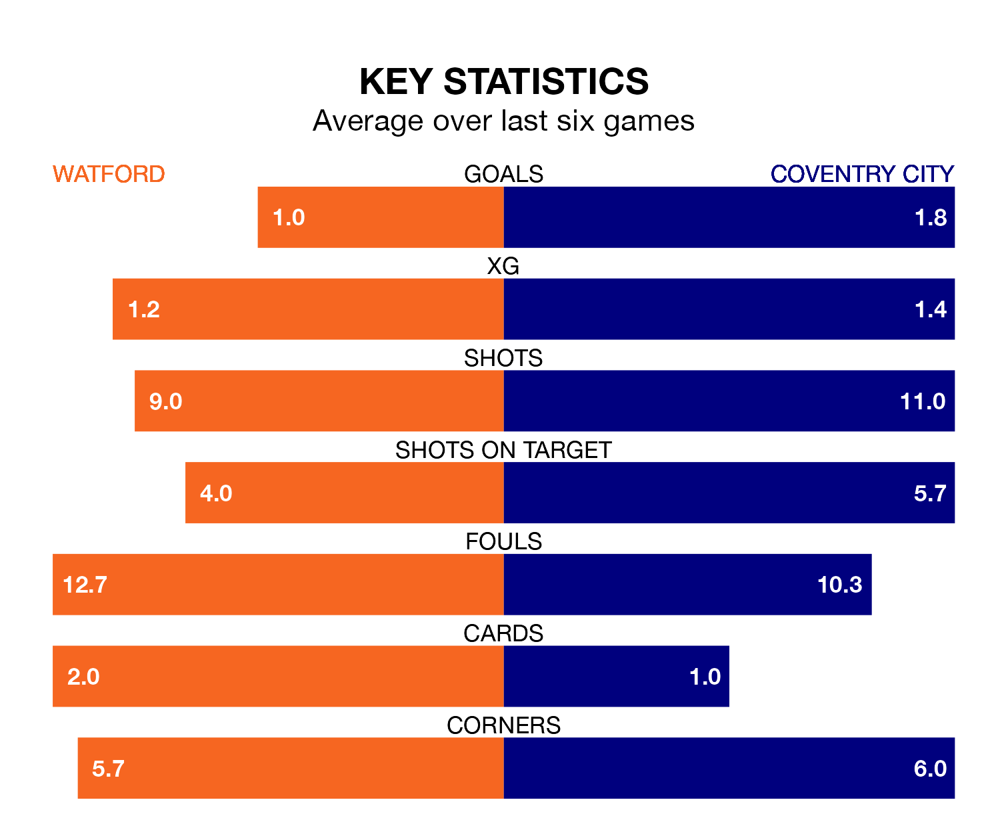

Watford are on a poor run ahead of hosting Coventry City at Vicarage Road on Saturday, with just four points collected from their last six games.
The Hornets have picked up one win and one draw in their last six EFL Championship games, and face a Sky Blues side whose last six games have brought three wins and one draw.
With 57 goals in 36 games so far this season, Coventry are scoring more than average in the league with 1.6 goals per game. And they are conceding fewer than average, letting in 42 goals at a rate of 1.2 per game.
Watford, meanwhile, are average scorers, with 1.4 goals per game. They have also conceded 1.4 goals per game.
In the last 10 years, Watford and Coventry have played each other on six occasions. Watford won two of them, Coventry one, and they drew three times.
On average, the Hornets scored 1.8 goals and the Sky Blues 1.3 in those matches.
Their last meeting was on September 2, when they played out a 3-3 draw.
City are eighth in the table after 36 games, of which they have won 14 and drawn 12, earning 54 points.
The Hornets are five places behind the Sky Blues in 13th, with 11 wins and 12 draws putting them on 45 points.
Watford's last match was on Wednesday, a 1-1 draw against Swansea City, with Ryan Porteous getting the goal for the Hornets.
Coventry beat Rotherham United 5-0 last time out, on Tuesday, with Ellis Simms (three), Fabio Tavares and Joel Latibeaudiere on the scoresheet.
Saturday's match will be refereed by Robert Madley, who has taken charge of 14 EFL Championship games so far this season, issuing five red cards and booking 68 players. He has awarded two penalties.
The last Watford game Madley refereed was a 3-3 away draw with Plymouth Argyle on January 1. His last Coventry match was their 1-1 draw away at Swansea City on August 19.
Updated: 09:34 (UTC), 08/03/24